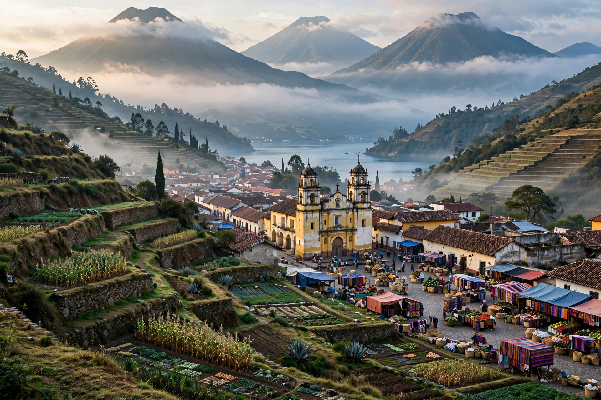

| Kʼicheʼ | |
|---|---|
| Native name | Qatzijobʼal |
| Region | Central highlands of Guatemala |
| Speakers | c. 1.1 million (2019 census) |
| Family | Mayan → Quichean-Mamean → Quichean |
| Status | Recognised national language of Guatemala |
Kʼicheʼ (also spelled Quiché, and Kʼicheʼ in the official ALMG orthography; native name Qatzijobʼal, "our speech") is a Mayan language of the Quichean branch spoken by the Kʼicheʼ people in the central highlands of Guatemala. With roughly one million speakers it is the most widely spoken Mayan language and the most spoken indigenous language in Guatemala, centred on the departments of Quiché, Totonicapán, Quetzaltenango and Sololá.
Classical Kʼicheʼ was the language of the powerful highland Kʼicheʼ kingdom (Qʼumarkaj) conquered by Pedro de Alvarado in 1524. In the decades after the conquest, Kʼicheʼ scribes adopted the Latin alphabet and produced an extraordinary alphabetic literature, including the Popol Vuh, the celebrated creation epic and dynastic history, written in the 1550s (and preserved in Francisco Ximénez's copy of c. 1701); the Título de Totonicapán; the Rabinal Achí, a dance-drama still performed in Rabinal; and the Annals of the Kaqchikels in the sister language. Rigoberta Menchú, the 1992 Nobel Peace laureate, is a Kʼicheʼ speaker whose testimony Me llamo Rigoberta Menchú brought the language community international attention.
Kʼicheʼ is an agglutinative, ergative-absolutive language with verb-initial (VOS/VSO) word order, a rich system of aspect rather than tense, and cross-referencing of both ergative and absolutive arguments on the verb. Its phonology contrasts plain and glottalised (ejective) consonants — written with an apostrophe, as in kʼ — and ten vowels in many dialects. Since the 1980s the Academia de Lenguas Mayas de Guatemala (ALMG) has promoted a standardised orthography. Despite its large speaker base, Kʼicheʼ is under pressure from Spanish, especially among urban youth, though it remains vigorous in many highland communities and is taught in bilingual intercultural education programmes.